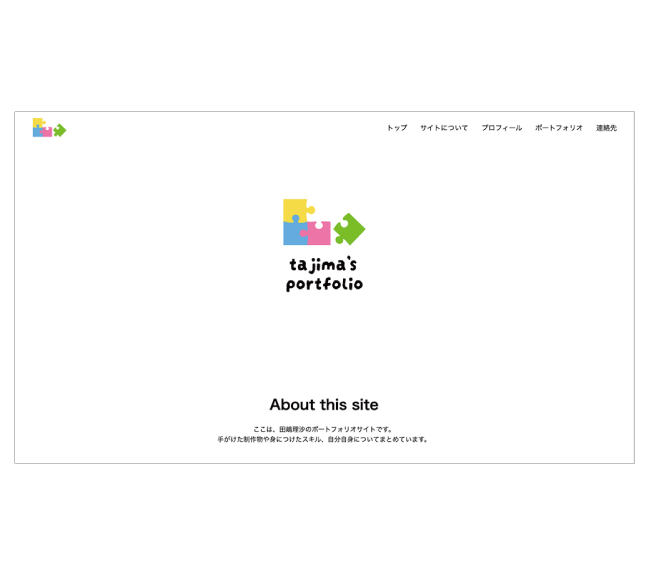

ポートフォリオサイト
【概要】
自身の経歴やスキル、制作物をまとめたポートフォリオサイトを制作しました。
【目的】
就職活動を行うのにあたり、制作物や経歴、スキルを伝える。
【ターゲット】
採用担当者の方々
【デザイン】
パズルのピースを自身の多数あるスキルに見立てました。
また、文章量が多くなり、見にくくなることを考慮して、意識的に空白を入れることを工夫しました。
【制作期間】
7日間
【使用ツール】
Illustrator / Photoshop / Visual Studio Code
【使用言語】
HTML / CSS